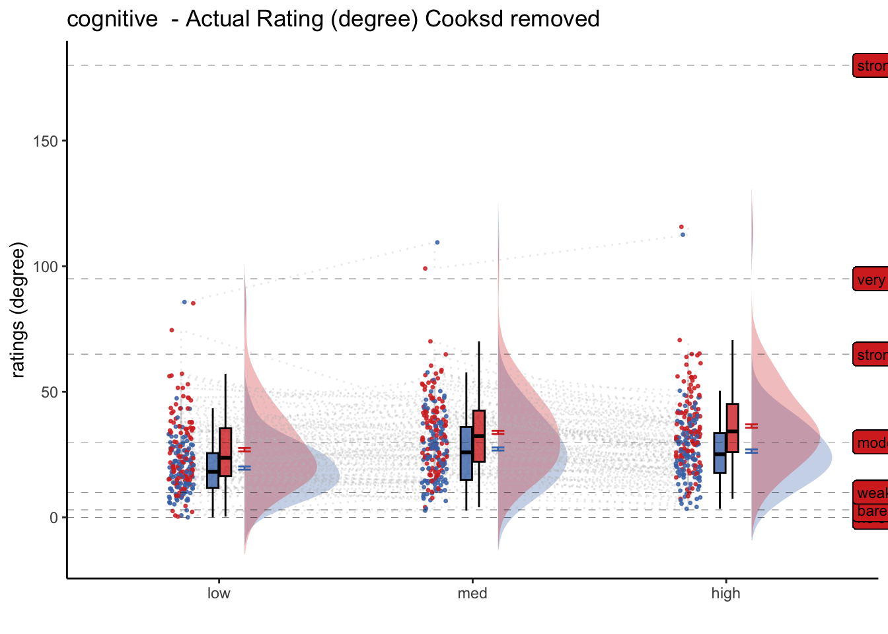

Chapter 5 outcome_rating ~ cue * stim
5.1 What is the purpose of this notebook?
Here, I plot the outcome ratings as a function of cue and stimulus intensity.
* Main model: lmer(outcome_rating ~ cue * stim)
* Main question: do outcome ratings differ as a function of cue type and stimulus intensity?
* If there is a main effect of cue on outcome ratings, does this cue effect differ depending on task type?
* Is there an interaction between the two factors?
* IV:
- cue (high / low)
- stim (high / med / low)
* DV: outcome rating
5.2 model 03 iv-cuecontrast dv-actual
## common dir for saving plots and model outputs
analysis_dir <- file.path(
main_dir, "analysis",
"mixedeffect", "model04_iv-cuecontrast_dv-outcome", as.character(Sys.Date()))
dir.create(analysis_dir, recursive = TRUE, showWarnings = FALSE)
for (taskname in c("pain", "vicarious", "cognitive")) {
subject_varkey <- "src_subject_id"
iv <- "param_cue_type"; iv_keyword <- "cue"
dv <- "event04_actual_angle"
dv_keyword <- "actual"
subject <- "subject"
xlab <- ""
ylab <- "ratings (degree)"
exclude <- "sub-0001|sub-0003|sub-0004|sub-0005|sub-0025|sub-0999"
w <- 10
h <- 6
model_savefname <- file.path(
analysis_dir,
paste("lmer_task-", taskname, "_cue_on_rating-", dv_keyword, "_",
as.character(Sys.Date()), ".txt",
sep = ""
)
)
# ___ 1) load data _______________________________________________________________ # nolint
data <- load_task_social_df(datadir, taskname, subject_varkey, iv, dv, exclude)
unique(data$src_subject_id)
data$subject <- factor(data$src_subject_id)
# ___ 2) mixed effects model _____________________________________________________ # nolint
cooksd <- lmer_onefactor_cooksd(
df = data, taskname, iv, dv, subject_keyword = subject, dv_keyword, model_savefname, print_lmer_output=FALSE
)
influential <- as.numeric(names(cooksd)[
(cooksd > (4 / as.numeric(length(unique(data$subject)))))
])
data_screen <- data[-influential, ]
# ___ 3) calculate difference scores and summarize _______________________________ # nolint
# TODO: within param_run_num
data$run_order[data$param_run_num > 3] <- "a"
data$run_order[data$param_run_num <= 3] <- "b"
sub_diff <- subset(data, select = c(
"subject", "session_id", "run_order",
"param_task_name", "param_cue_type",
"param_stimulus_type", dv
))
subjectwise <- meanSummary(sub_diff, c(
"subject", "session_id", "run_order",
"param_task_name", "param_cue_type",
"param_stimulus_type"
), dv)
mean_actual <- subjectwise[1:(length(subjectwise) - 1)]
wide <- mean_actual %>%
spread(param_cue_type, mean_per_sub)
wide$diff <- wide$high_cue - wide$low_cue
wide$stim_name[wide$param_stimulus_type == "high_stim"] <- "high"
wide$stim_name[wide$param_stimulus_type == "med_stim"] <- "med"
wide$stim_name[wide$param_stimulus_type == "low_stim"] <- "low"
wide$stim_ordered <- factor(wide$stim_name,
levels = c("low", "med", "high")
)
subjectwise_diff <- meanSummary(wide, c("subject", "stim_ordered"), "diff")
subjectwise_diff$stim_ordered <- factor(subjectwise_diff$stim_ordered,
levels = c("low", "med", "high")
)
groupwise_diff <- summarySEwithin(
data = subjectwise_diff,
measurevar = "mean_per_sub", # variable created from above
withinvars = c("stim_ordered"), # iv
idvar = "subject"
)
# ___ 4) plot ____________________________________________________________________ # nolint
# 4-1. parameters ______________________________________________________________ # nolint
subjectwise <- subjectwise_diff
groupwise <- groupwise_diff
iv <- "stim_ordered"
subject_mean <- "mean_per_sub"
group_mean <- "mean_per_sub_norm_mean"
p1.se <- "se"
subject <- "subject"
if (any(startsWith(taskname, c("pain", "Pain")))) { # red
color <- c("#B7021E", "#B7021E", "#B7021E")
} else if (any(startsWith(taskname, c("vicarious", "Vicarious")))) { # green
color <- c("#22834A", "#22834A", "#22834A")
} else if (any(startsWith(taskname, c("cognitive", "Cognitive")))) { # blue
color <- c("#0237C9", "#0237C9", "#0237C9")
}
# 4-2. plot rain cloud plots ____________________________________________________ # nolint
p1.xlab <- ""
p1.ylab <- "Cue effect \n(actual ratings of high > low cue)"
ylim <- c()
p1.ggtitle <- paste(taskname, " - actual judgment (degree)")
p1.title <- paste(taskname, " - actual")
p1.save_fname <- file.path(
analysis_dir,
paste("raincloud_task-", taskname, "_rating-",
dv_keyword, "-cuecontrast_", as.character(Sys.Date()), ".png",
sep = ""
)
)
dv_keyword = "cuecontrast"
ylim = c(-75,75)
g <- plot_rainclouds_onefactor(
subjectwise, groupwise, iv, subject_mean, group_mean, p1.se,
subject, p1.ggtitle, p1.title, p1.xlab, p1.ylab, taskname, ylim,
w, h, dv_keyword, color, p1.save_fname
)
g <- g + geom_hline(yintercept = 0, size = 0.5, linetype = "dashed")
ggsave(p1.save_fname, plot = g)
# 4-3. plot geom range _________________________________________________________ # nolint
p2.se <- "sd" # se, sd, ci
p2.xlab <- "stimulus intensity"
p2.ylab <- "Cue effect \n(actual ratings of high > low cue)"
p2.ggtitle <- paste(taskname, " - cue effect per stimulus intensity", sep = "")
w <- 5
h <- 5
p2.save_fname <- file.path(
analysis_dir,
paste("cueeffect_task-", taskname, "_rating-", dv_keyword, "_",
as.character(Sys.Date()), ".png",
sep = ""
)
)
r <- plot_geompointrange_onefactor(
subjectwise, groupwise, iv,
subject_mean, group_mean, p2.se,
p2.xlab, p2.ylab, color, p2.ggtitle, w, h, p2.save_fname
)
r <- r + geom_hline(yintercept = 0, size = 1, linetype = "dashed")
ggsave(p2.save_fname, plot = r)
}## Warning in geom_line(data = subjectwise, aes(group = .data[[subject]], y
## = .data[[subjectwise_mean]], : Ignoring unknown aesthetics: fill## Warning: Removed 1 rows containing non-finite values (`stat_ydensity()`).## Warning: Removed 1 rows containing non-finite values (`stat_boxplot()`).## Warning: Using the `size` aesthietic with geom_polygon was deprecated in ggplot2 3.4.0.
## ℹ Please use the `linewidth` aesthetic instead.## Warning: Removed 1 row containing missing values (`geom_line()`).## Warning: Removed 1 rows containing missing values (`geom_point()`).## Warning: Using `size` aesthetic for lines was deprecated in ggplot2 3.4.0.
## ℹ Please use `linewidth` instead.## Saving 7 x 5 in image## Warning: Removed 1 rows containing non-finite values (`stat_ydensity()`).## Warning: Removed 1 rows containing non-finite values (`stat_boxplot()`).## Warning: Removed 1 row containing missing values (`geom_line()`).## Warning: Removed 1 rows containing missing values (`geom_point()`).## Warning: The `<scale>` argument of `guides()` cannot be `FALSE`. Use "none" instead as
## of ggplot2 3.3.4.## Saving 7 x 5 in image## Warning: Removed 1 rows containing missing values (`geom_point()`).## Warning: Removed 3 rows containing missing values (`geom_pointrange()`).## Warning in geom_line(data = subjectwise, aes(group = .data[[subject]], y
## = .data[[subjectwise_mean]], : Ignoring unknown aesthetics: fill## Warning: Removed 1 rows containing non-finite values (`stat_ydensity()`).## Warning: Removed 1 rows containing non-finite values (`stat_boxplot()`).## Warning: Removed 1 rows containing missing values (`geom_point()`).## Saving 7 x 5 in image## Warning: Removed 1 rows containing non-finite values (`stat_ydensity()`).## Warning: Removed 1 rows containing non-finite values (`stat_boxplot()`).## Warning: Removed 1 rows containing missing values (`geom_point()`).## Saving 7 x 5 in image## Warning: Removed 1 rows containing missing values (`geom_point()`).## Warning: Removed 3 rows containing missing values (`geom_pointrange()`).## Warning in geom_line(data = subjectwise, aes(group = .data[[subject]], y
## = .data[[subjectwise_mean]], : Ignoring unknown aesthetics: fill## Saving 7 x 5 in image
## Saving 7 x 5 in image5.2.2 model 04 iv-cue-stim dv-actual
combined_se_calc_cooksd <- data.frame()
analysis_dir <- file.path(
main_dir,
"analysis", "mixedeffect", "model04_iv-cue-stim_dv-actual",as.character(Sys.Date())
)
dir.create(analysis_dir, showWarnings = FALSE, recursive = TRUE)
# 1. [ PARAMETERS ] __________________________________________________ # nolint
dv_keyword <- "actual"
xlab <- ""
ylab <- "judgment (degree)"
for (taskname in c("pain", "vicarious", "cognitive")) {
ggtitle <- paste(taskname, " - actual judgment (degree)")
title <- paste(taskname, " - actual")
subject <- "subject"
data <- load_task_social_df(datadir,
taskname = taskname,
subject_varkey = "src_subject_id",
iv = "param_cue_type",
dv = "event04_actual_angle",
exclude = "sub-0001|sub-0003|sub-0004|sub-0005|sub-0025|sub-0999"
)
w <- 10
h <- 6
# [ CONTRASTS ] ________________________________________________________________________________ # nolint
# contrast code ________________________________________
data$stim[data$event03_stimulus_type == "low_stim"] <- -0.5 # social influence task
data$stim[data$event03_stimulus_type == "med_stim"] <- 0 # no influence task
data$stim[data$event03_stimulus_type == "high_stim"] <- 0.5 # no influence task
data$stim_factor <- factor(data$event03_stimulus_type)
# contrast code 1 linear
data$stim_con_linear[data$event03_stimulus_type == "low_stim"] <- -0.5
data$stim_con_linear[data$event03_stimulus_type == "med_stim"] <- 0
data$stim_con_linear[data$event03_stimulus_type == "high_stim"] <- 0.5
# contrast code 2 quadratic
data$stim_con_quad[data$event03_stimulus_type == "low_stim"] <- -0.33
data$stim_con_quad[data$event03_stimulus_type == "med_stim"] <- 0.66
data$stim_con_quad[data$event03_stimulus_type == "high_stim"] <- -0.33
# social cude contrast
data$social_cue[data$param_cue_type == "low_cue"] <- -0.5 # social influence task
data$social_cue[data$param_cue_type == "high_cue"] <- 0.5 # no influence task
stim_con1 <- "stim_con_linear"
stim_con2 <- "stim_con_quad"
iv1 <- "social_cue"
dv <- "event04_actual_angle"
# [ MODEL ] _________________________________________________ # nolint
model_savefname <- file.path(
analysis_dir,
paste("lmer_task-", taskname,
"_rating-", dv_keyword,
"_", as.character(Sys.Date()), "_cooksd.txt",
sep = ""
)
)
cooksd <- lmer_two_factor_cooksd_fix(
data, taskname, iv1, stim_con1, stim_con2, dv,
subject, dv_keyword, model_savefname, 'random_slopes', print_lmer_output = FALSE
)
influential <- as.numeric(names(cooksd)[
(cooksd > (4 / as.numeric(length(unique(data$src_subject_id)))))
])
data_screen <- data[-influential, ]
# [ PLOT ] reordering for plots _________________________ # nolint
data_screen$cue_name[data_screen$param_cue_type == "high_cue"] <- "high cue"
data_screen$cue_name[data_screen$param_cue_type == "low_cue"] <- "low cue"
data_screen$stim_name[data_screen$param_stimulus_type == "high_stim"] <- "high"
data_screen$stim_name[data_screen$param_stimulus_type == "med_stim"] <- "med"
data_screen$stim_name[data_screen$param_stimulus_type == "low_stim"] <- "low"
# DATA$levels_ordered <- factor(DATA$param_stimulus_type, levels=c("low", "med", "high"))
data_screen$stim_ordered <- factor(
data_screen$stim_name,
levels = c("low", "med", "high")
)
data_screen$cue_ordered <- factor(
data_screen$cue_name,
levels = c("low cue", "high cue")
)
model_iv1 <- "stim_ordered"
model_iv2 <- "cue_ordered"
# [ PLOT ] calculate mean and se _________________________
actual_subjectwise <- meanSummary(
data_screen,
c(subject, model_iv1, model_iv2), dv
)
actual_groupwise <- summarySEwithin(
data = actual_subjectwise,
measurevar = "mean_per_sub",
withinvars = c(model_iv1, model_iv2), idvar = subject
)
actual_groupwise$task <- taskname
# https://stackoverflow.com/questions/29402528/append-data-frames-together-in-a-for-loop/29419402
combined_se_calc_cooksd <- rbind(combined_se_calc_cooksd, actual_groupwise)
# if(any(startsWith(dv_keyword, c("expect", "Expect")))){color = c( "#1B9E77", "#D95F02")}else{color=c( "#4575B4", "#D73027")} # if keyword starts with
# print("groupwisemean")
# [ PLOT ] calculate mean and se ----------------------------------------------------------------------------
sub_mean <- "mean_per_sub"
group_mean <- "mean_per_sub_norm_mean"
se <- "se"
subject <- "subject"
ggtitle <- paste(taskname, " - Actual Rating (degree) Cooksd removed")
title <- paste(taskname, " - Actual")
xlab <- ""
ylab <- "ratings (degree)"
ylim <- c(-10,190)
dv_keyword <- "actual"
if (any(startsWith(dv_keyword, c("expect", "Expect")))) {
color <- c("#1B9E77", "#D95F02")
} else {
color <- c("#4575B4", "#D73027")
} # if keyword starts with
plot_savefname <- file.path(
analysis_dir,
paste("raincloud_task-", taskname,
"_rating-", dv_keyword,
"_", as.character(Sys.Date()), "_cooksd.png",
sep = ""
)
)
g <- plot_rainclouds_twofactor(
actual_subjectwise, actual_groupwise, model_iv1, model_iv2,
sub_mean, group_mean, se, subject,
ggtitle, title, xlab, ylab, taskname,ylim,
w, h, dv_keyword, color, plot_savefname
)
g <- g +
geom_hline(yintercept = 0, size = 0.1, linetype = "dashed") +
geom_label(x = 3.5, y = 0, label = c("no sensation"), hjust = 0, nudge_x = 0.1, size = 3) +
geom_hline(yintercept = 3, size = 0.1, linetype = "dashed") +
geom_label(x = 3.5, y = 3, label = c("barely detectable"), hjust = 0, nudge_x = 0.1, size = 3) +
geom_hline(yintercept = 10, size = 0.1, linetype = "dashed") +
geom_label(x = 3.5, y = 10, label = c("weak"), hjust = 0, nudge_x = 0.1, size = 3) +
geom_hline(yintercept = 30, size = 0.1, linetype = "dashed") +
geom_label(x = 3.5, y = 30, label = c("moderate"), hjust = 0, nudge_x = 0.1, size = 3) +
geom_hline(yintercept = 65, size = 0.1, linetype = "dashed") +
geom_label(x = 3.5, y = 65, label = c("strong"), hjust = 0, nudge_x = 0.1, size = 3) +
geom_hline(yintercept = 95, size = 0.1, linetype = "dashed") +
geom_label(x = 3.5, y = 95, label = c("very strong"), hjust = 0, nudge_x = 0.1, size = 3) +
geom_hline(yintercept = 180, size = 0.1, linetype = "dashed") +
geom_label(x = 3.5, y = 180, label = c("strongest imaginable"), hjust = 0, nudge_x = 0.1, size = 3) +
coord_cartesian(clip = 'off')+
theme_classic() +
theme(legend.position = "none")
ggsave(plot_savefname, width = w, height = h)
# save fixed random effects _______________________________
randEffect$newcoef <- mapvalues(randEffect$term,
from = c("(Intercept)", "data[, iv]",
"data[, stim_con1]", "data[, stim_con2]",
"data[, iv]:data[, stim_con1]",
"data[, iv]:data[, stim_con2]"),
to = c("rand_intercept", "rand_cue", "rand_stimlin",
"rand_stimquad", "rand_int_cue_stimlin", "rand_int_cue_stimquad")
)
#
# # The arguments to spread():
# # - data: Data object
# # - key: Name of column containing the new column names
# # - value: Name of column containing values
#
# # TODO: add fixed effects
#
rand_subset <- subset(randEffect, select = -c(grpvar, term, condsd))
wide_rand <- spread(rand_subset, key = newcoef, value = condval)
wide_fix <- do.call(
"rbind",
replicate(nrow(wide_rand), as.data.frame(t(as.matrix(fixEffect))),
simplify = FALSE
)
)
rownames(wide_fix) <- NULL
new_wide_fix <- dplyr::rename(wide_fix,
fix_intercept = `(Intercept)`,
fix_cue = `social_cue`, # `data[, iv]`,
fix_stimulus_linear = `stim_con_linear`, # `data[, stim_con1]`,
fix_stimulus_quad = `stim_con_quad`, #`data[, stim_con2]`,
fix_int_cue_stimlin = `social_cue:stim_con_linear`, #`data[, iv]:data[, stim_con1]`,
fix_int_cue_stimquad = `social_cue:stim_con_quad` #`data[, iv]:data[, stim_con2]`
)
total <- cbind(wide_rand, new_wide_fix)
total$task <- taskname
new_total <- total %>% dplyr::select(task, everything())
new_total <- dplyr::rename(total, subj = grp)
plot_savefname <- file.path(analysis_dir,
paste("randeffect_task-", taskname,
"_", as.character(Sys.Date()), "_outlier-cooksd.csv", sep = ""))
write.csv(new_total, plot_savefname, row.names = FALSE)
}##
## Attaching package: 'equatiomatic'## The following object is masked from 'package:merTools':
##
## hsb## boundary (singular) fit: see help('isSingular')## $$
## \begin{aligned}
## \operatorname{event04\_actual\_angle}_{i} &\sim N \left(\mu, \sigma^2 \right) \\
## \mu &=\alpha_{j[i]} + \beta_{1j[i]}(\operatorname{social\_cue}) + \beta_{2j[i]}(\operatorname{stim\_con\_linear}) + \beta_{3j[i]}(\operatorname{stim\_con\_quad}) + \beta_{4j[i]}(\operatorname{social\_cue} \times \operatorname{stim\_con\_linear}) + \beta_{5j[i]}(\operatorname{social\_cue} \times \operatorname{stim\_con\_quad}) \\
## \left(
## \begin{array}{c}
## \begin{aligned}
## &\alpha_{j} \\
## &\beta_{1j} \\
## &\beta_{2j} \\
## &\beta_{3j} \\
## &\beta_{4j} \\
## &\beta_{5j}
## \end{aligned}
## \end{array}
## \right)
## &\sim N \left(
## \left(
## \begin{array}{c}
## \begin{aligned}
## &\mu_{\alpha_{j}} \\
## &\mu_{\beta_{1j}} \\
## &\mu_{\beta_{2j}} \\
## &\mu_{\beta_{3j}} \\
## &\mu_{\beta_{4j}} \\
## &\mu_{\beta_{5j}}
## \end{aligned}
## \end{array}
## \right)
## ,
## \left(
## \begin{array}{cccccc}
## \sigma^2_{\alpha_{j}} & \rho_{\alpha_{j}\beta_{1j}} & \rho_{\alpha_{j}\beta_{2j}} & \rho_{\alpha_{j}\beta_{3j}} & \rho_{\alpha_{j}\beta_{4j}} & \rho_{\alpha_{j}\beta_{5j}} \\
## \rho_{\beta_{1j}\alpha_{j}} & \sigma^2_{\beta_{1j}} & \rho_{\beta_{1j}\beta_{2j}} & \rho_{\beta_{1j}\beta_{3j}} & \rho_{\beta_{1j}\beta_{4j}} & \rho_{\beta_{1j}\beta_{5j}} \\
## \rho_{\beta_{2j}\alpha_{j}} & \rho_{\beta_{2j}\beta_{1j}} & \sigma^2_{\beta_{2j}} & \rho_{\beta_{2j}\beta_{3j}} & \rho_{\beta_{2j}\beta_{4j}} & \rho_{\beta_{2j}\beta_{5j}} \\
## \rho_{\beta_{3j}\alpha_{j}} & \rho_{\beta_{3j}\beta_{1j}} & \rho_{\beta_{3j}\beta_{2j}} & \sigma^2_{\beta_{3j}} & \rho_{\beta_{3j}\beta_{4j}} & \rho_{\beta_{3j}\beta_{5j}} \\
## \rho_{\beta_{4j}\alpha_{j}} & \rho_{\beta_{4j}\beta_{1j}} & \rho_{\beta_{4j}\beta_{2j}} & \rho_{\beta_{4j}\beta_{3j}} & \sigma^2_{\beta_{4j}} & \rho_{\beta_{4j}\beta_{5j}} \\
## \rho_{\beta_{5j}\alpha_{j}} & \rho_{\beta_{5j}\beta_{1j}} & \rho_{\beta_{5j}\beta_{2j}} & \rho_{\beta_{5j}\beta_{3j}} & \rho_{\beta_{5j}\beta_{4j}} & \sigma^2_{\beta_{5j}}
## \end{array}
## \right)
## \right)
## \text{, for subject j = 1,} \dots \text{,J}
## \end{aligned}
## $$## Warning in geom_line(data = subjectwise, aes(group = .data[[subject]], y
## = .data[[sub_mean]], : Ignoring unknown aesthetics: fill## Warning: Duplicated aesthetics after name standardisation: width## Coordinate system already present. Adding new coordinate system, which will
## replace the existing one.## The following `from` values were not present in `x`: data[, iv], data[, stim_con1], data[, stim_con2], data[, iv]:data[, stim_con1], data[, iv]:data[, stim_con2]## boundary (singular) fit: see help('isSingular')## Warning: Model failed to converge with 1 negative eigenvalue: -8.8e-02## $$
## \begin{aligned}
## \operatorname{event04\_actual\_angle}_{i} &\sim N \left(\mu, \sigma^2 \right) \\
## \mu &=\alpha_{j[i]} + \beta_{1j[i]}(\operatorname{social\_cue}) + \beta_{2j[i]}(\operatorname{stim\_con\_linear}) + \beta_{3j[i]}(\operatorname{stim\_con\_quad}) + \beta_{4j[i]}(\operatorname{social\_cue} \times \operatorname{stim\_con\_linear}) + \beta_{5j[i]}(\operatorname{social\_cue} \times \operatorname{stim\_con\_quad}) \\
## \left(
## \begin{array}{c}
## \begin{aligned}
## &\alpha_{j} \\
## &\beta_{1j} \\
## &\beta_{2j} \\
## &\beta_{3j} \\
## &\beta_{4j} \\
## &\beta_{5j}
## \end{aligned}
## \end{array}
## \right)
## &\sim N \left(
## \left(
## \begin{array}{c}
## \begin{aligned}
## &\mu_{\alpha_{j}} \\
## &\mu_{\beta_{1j}} \\
## &\mu_{\beta_{2j}} \\
## &\mu_{\beta_{3j}} \\
## &\mu_{\beta_{4j}} \\
## &\mu_{\beta_{5j}}
## \end{aligned}
## \end{array}
## \right)
## ,
## \left(
## \begin{array}{cccccc}
## \sigma^2_{\alpha_{j}} & \rho_{\alpha_{j}\beta_{1j}} & \rho_{\alpha_{j}\beta_{2j}} & \rho_{\alpha_{j}\beta_{3j}} & \rho_{\alpha_{j}\beta_{4j}} & \rho_{\alpha_{j}\beta_{5j}} \\
## \rho_{\beta_{1j}\alpha_{j}} & \sigma^2_{\beta_{1j}} & \rho_{\beta_{1j}\beta_{2j}} & \rho_{\beta_{1j}\beta_{3j}} & \rho_{\beta_{1j}\beta_{4j}} & \rho_{\beta_{1j}\beta_{5j}} \\
## \rho_{\beta_{2j}\alpha_{j}} & \rho_{\beta_{2j}\beta_{1j}} & \sigma^2_{\beta_{2j}} & \rho_{\beta_{2j}\beta_{3j}} & \rho_{\beta_{2j}\beta_{4j}} & \rho_{\beta_{2j}\beta_{5j}} \\
## \rho_{\beta_{3j}\alpha_{j}} & \rho_{\beta_{3j}\beta_{1j}} & \rho_{\beta_{3j}\beta_{2j}} & \sigma^2_{\beta_{3j}} & \rho_{\beta_{3j}\beta_{4j}} & \rho_{\beta_{3j}\beta_{5j}} \\
## \rho_{\beta_{4j}\alpha_{j}} & \rho_{\beta_{4j}\beta_{1j}} & \rho_{\beta_{4j}\beta_{2j}} & \rho_{\beta_{4j}\beta_{3j}} & \sigma^2_{\beta_{4j}} & \rho_{\beta_{4j}\beta_{5j}} \\
## \rho_{\beta_{5j}\alpha_{j}} & \rho_{\beta_{5j}\beta_{1j}} & \rho_{\beta_{5j}\beta_{2j}} & \rho_{\beta_{5j}\beta_{3j}} & \rho_{\beta_{5j}\beta_{4j}} & \sigma^2_{\beta_{5j}}
## \end{array}
## \right)
## \right)
## \text{, for subject j = 1,} \dots \text{,J}
## \end{aligned}
## $$## Warning in geom_line(data = subjectwise, aes(group = .data[[subject]], y = .data[[sub_mean]], : Ignoring unknown aesthetics: fill
## Duplicated aesthetics after name standardisation: width## Coordinate system already present. Adding new coordinate system, which will
## replace the existing one.## The following `from` values were not present in `x`: data[, iv], data[, stim_con1], data[, stim_con2], data[, iv]:data[, stim_con1], data[, iv]:data[, stim_con2]## boundary (singular) fit: see help('isSingular')## Warning: Model failed to converge with 1 negative eigenvalue: -1.3e+01## $$
## \begin{aligned}
## \operatorname{event04\_actual\_angle}_{i} &\sim N \left(\mu, \sigma^2 \right) \\
## \mu &=\alpha_{j[i]} + \beta_{1j[i]}(\operatorname{social\_cue}) + \beta_{2j[i]}(\operatorname{stim\_con\_linear}) + \beta_{3j[i]}(\operatorname{stim\_con\_quad}) + \beta_{4j[i]}(\operatorname{social\_cue} \times \operatorname{stim\_con\_linear}) + \beta_{5j[i]}(\operatorname{social\_cue} \times \operatorname{stim\_con\_quad}) \\
## \left(
## \begin{array}{c}
## \begin{aligned}
## &\alpha_{j} \\
## &\beta_{1j} \\
## &\beta_{2j} \\
## &\beta_{3j} \\
## &\beta_{4j} \\
## &\beta_{5j}
## \end{aligned}
## \end{array}
## \right)
## &\sim N \left(
## \left(
## \begin{array}{c}
## \begin{aligned}
## &\mu_{\alpha_{j}} \\
## &\mu_{\beta_{1j}} \\
## &\mu_{\beta_{2j}} \\
## &\mu_{\beta_{3j}} \\
## &\mu_{\beta_{4j}} \\
## &\mu_{\beta_{5j}}
## \end{aligned}
## \end{array}
## \right)
## ,
## \left(
## \begin{array}{cccccc}
## \sigma^2_{\alpha_{j}} & \rho_{\alpha_{j}\beta_{1j}} & \rho_{\alpha_{j}\beta_{2j}} & \rho_{\alpha_{j}\beta_{3j}} & \rho_{\alpha_{j}\beta_{4j}} & \rho_{\alpha_{j}\beta_{5j}} \\
## \rho_{\beta_{1j}\alpha_{j}} & \sigma^2_{\beta_{1j}} & \rho_{\beta_{1j}\beta_{2j}} & \rho_{\beta_{1j}\beta_{3j}} & \rho_{\beta_{1j}\beta_{4j}} & \rho_{\beta_{1j}\beta_{5j}} \\
## \rho_{\beta_{2j}\alpha_{j}} & \rho_{\beta_{2j}\beta_{1j}} & \sigma^2_{\beta_{2j}} & \rho_{\beta_{2j}\beta_{3j}} & \rho_{\beta_{2j}\beta_{4j}} & \rho_{\beta_{2j}\beta_{5j}} \\
## \rho_{\beta_{3j}\alpha_{j}} & \rho_{\beta_{3j}\beta_{1j}} & \rho_{\beta_{3j}\beta_{2j}} & \sigma^2_{\beta_{3j}} & \rho_{\beta_{3j}\beta_{4j}} & \rho_{\beta_{3j}\beta_{5j}} \\
## \rho_{\beta_{4j}\alpha_{j}} & \rho_{\beta_{4j}\beta_{1j}} & \rho_{\beta_{4j}\beta_{2j}} & \rho_{\beta_{4j}\beta_{3j}} & \sigma^2_{\beta_{4j}} & \rho_{\beta_{4j}\beta_{5j}} \\
## \rho_{\beta_{5j}\alpha_{j}} & \rho_{\beta_{5j}\beta_{1j}} & \rho_{\beta_{5j}\beta_{2j}} & \rho_{\beta_{5j}\beta_{3j}} & \rho_{\beta_{5j}\beta_{4j}} & \sigma^2_{\beta_{5j}}
## \end{array}
## \right)
## \right)
## \text{, for subject j = 1,} \dots \text{,J}
## \end{aligned}
## $$## Warning in geom_line(data = subjectwise, aes(group = .data[[subject]], y = .data[[sub_mean]], : Ignoring unknown aesthetics: fill
## Duplicated aesthetics after name standardisation: width## Coordinate system already present. Adding new coordinate system, which will
## replace the existing one.## The following `from` values were not present in `x`: data[, iv], data[, stim_con1], data[, stim_con2], data[, iv]:data[, stim_con1], data[, iv]:data[, stim_con2]5.2.3 model 04 4-2 individual differences in cue effects
# stack task- .csv
dfP = read.csv(file.path(analysis_dir, paste('randeffect_task-pain_',as.character(Sys.Date()),'_outlier-cooksd.csv', sep='') ))
dfV = read.csv(file.path(analysis_dir, paste('randeffect_task-vicarious_',as.character(Sys.Date()),'_outlier-cooksd.csv', sep='') ))
dfC = read.csv(file.path(analysis_dir, paste('randeffect_task-cognitive_',as.character(Sys.Date()),'_outlier-cooksd.csv', sep='') ))
pvc <- merge_recurse(list(dfP,dfV,dfC))
save_fname = file.path(analysis_dir, paste('randeffect_task-all_',as.character(Sys.Date()),'_outlier-cooksd.csv', sep='') )
write.csv(pvc, save_fname, row.names = FALSE)5.2.4 model 04 4-3 scatter plot
# stack
pvc_rand_cue_subset <- subset(pvc, select = c(task, subj, social_cue))
pvc_rand_cue <- spread(pvc_rand_cue_subset, key = task, value = social_cue)
# plot individually
pv <- plot_ggplot_correlation(data = pvc_rand_cue, x = 'vicarious', y = 'pain', p_acc = 0.001, r_acc = 0.01, limit_min = -20, limit_max = 20, label_position = 18)
vc <- plot_ggplot_correlation(data = pvc_rand_cue, x = 'cognitive', y = 'vicarious', p_acc = 0.001, r_acc = 0.01, limit_min = -20, limit_max = 20, label_position = 18)
cp <- plot_ggplot_correlation(data = pvc_rand_cue, x = 'pain', y = 'cognitive', p_acc = 0.001, r_acc = 0.01, limit_min = -20, limit_max = 20, label_position = 18)
# combine plots and add title
plots <- ggpubr::ggarrange(pv, vc, cp, ncol = 3, nrow = 1, common.legend = FALSE, legend = "bottom")## Warning: Removed 3 rows containing non-finite values (`stat_cor()`).## Warning: Removed 3 rows containing missing values (`geom_point()`).## Warning: Removed 1 rows containing non-finite values (`stat_cor()`).## Warning: Removed 1 rows containing missing values (`geom_point()`).## Warning: Removed 3 rows containing non-finite values (`stat_cor()`).## Warning: Removed 3 rows containing missing values (`geom_point()`).plots_title <- annotate_figure(plots,top = text_grob("individual differences\n - cue effects from expectation ratings", color = "black", face = "bold", size = 10 ))
save_plotname <- file.path(
analysis_dir,
paste("randeffect_scatterplot_task-all_",
as.character(Sys.Date()), ".png",
sep = ""
)
)
plots
ggsave(save_plotname, width = 10, height = 3)5.2.5 model 04 4-4 lineplot
library(ggpubr)
DATA = as.data.frame(combined_se_calc_cooksd)
color = c( "#4575B4", "#D73027")
LINEIV1 = "stim_ordered"
LINEIV2 = "cue_ordered"
MEAN = "mean_per_sub_norm_mean"
ERROR = "ci"
dv_keyword = "actual"
p1 = plot_lineplot_twofactor(DATA, 'pain',
LINEIV1, LINEIV2, MEAN, ERROR, color, ggtitle = 'pain' )
p2 = plot_lineplot_twofactor(DATA,'vicarious',
LINEIV1, LINEIV2, MEAN, ERROR, color,ggtitle = 'vicarious')
p3 = plot_lineplot_twofactor(DATA, 'cognitive',
LINEIV1, LINEIV2, MEAN, ERROR, color,ggtitle = 'cognitive')
#grid.arrange(p1, p2, p3, ncol=3 , common.legend = TRUE)
ggpubr::ggarrange(p1,p2,p3,ncol = 3, nrow = 1, common.legend = TRUE,legend = "bottom")
plot_filename = file.path(analysis_dir,
paste('lineplot_task-all_rating-',dv_keyword,'.png', sep = ""))
ggsave(plot_filename, width = 8, height = 4)